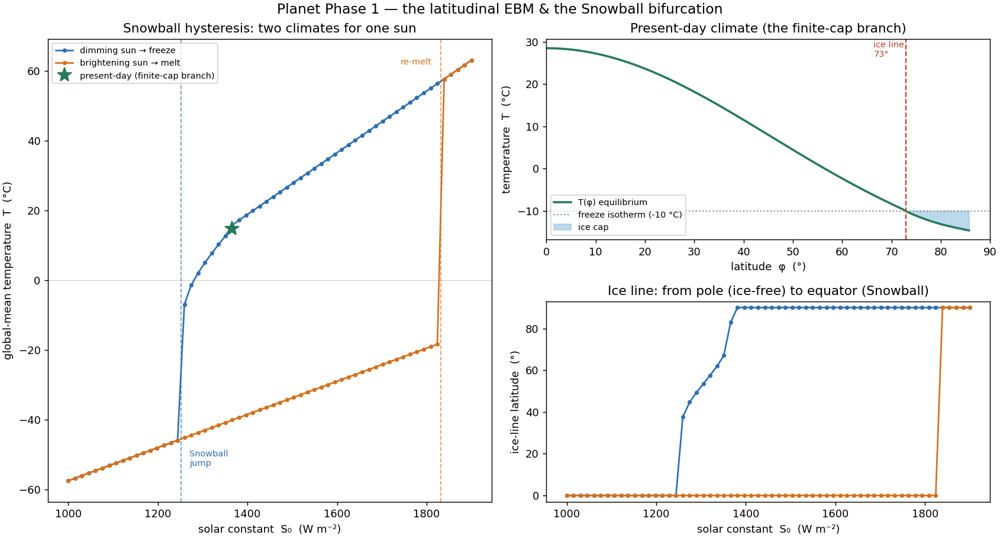
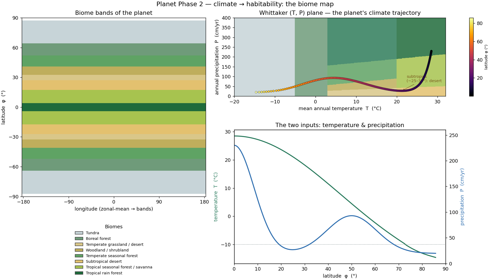
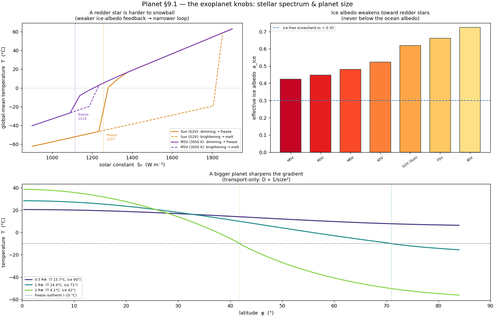
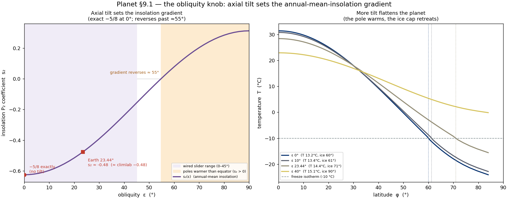
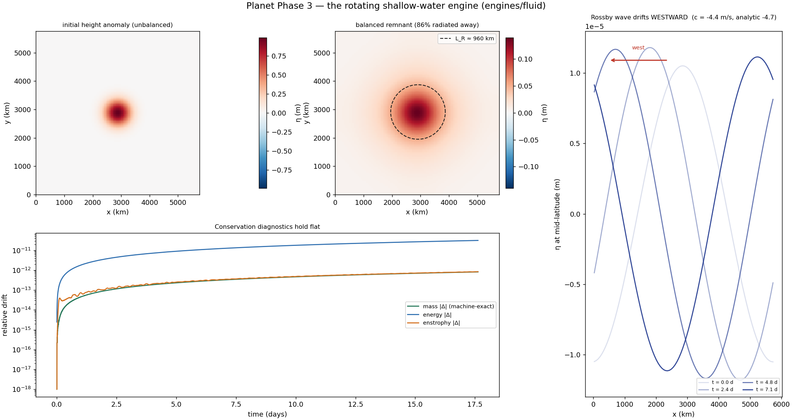
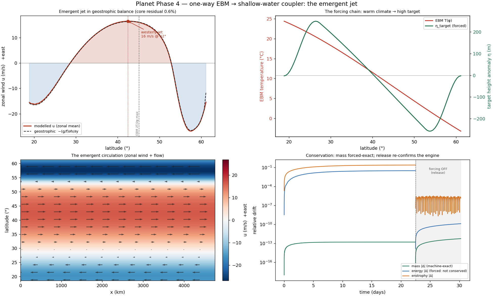
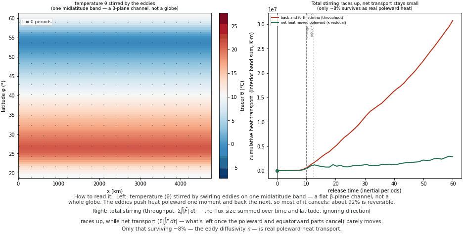

{kind=link}

Snowball-Earth hysteresis
one knob (the solar constant), two stable climates, a catastrophic freeze
needs .[viz]
python -m planet snowball
Stellar flux and planet parameters in — climate, circulation, and biomes out. A clickable tour of every demonstration, interactive globe, and the teaching notebook.
Drag to rotate, scroll to zoom, hover for the numbers — no install, they open straight in your browser.
Each prints its validation table and banks a figure; click a figure for the full image, or copy the command to reproduce it.

one knob (the solar constant), two stable climates, a catastrophic freeze
needs .[viz]
python -m planet snowball

the Whittaker (temperature, rainfall) classifier; warming migrates the bands poleward
needs .[viz]
python -m planet biomes

a redder star and a bigger planet reshape the climate and the ice line
needs .[viz]
python -m planet exoplanet

how the planet's tilt reshapes the pole-to-equator sunlight
needs .[viz]
python -m planet obliquity

geostrophic adjustment on the sphere — the circulation engine on its own
needs .[viz] · runs a short simulation
python -m planet shallowwater

an emergent jet grows from the pole-to-equator temperature gradient (one-way coupling)
needs .[viz] .[webviz] · runs a short simulation
python -m planet coupler

the emergent eddy stirring the temperature, animated as a two-panel GIF
needs .[viz] · runs a short simulation
python -m planet eddy_life
the same eddy life cycle, animated on the interactive globe
needs .[webviz] · runs a short simulation
python -m planet eddy_globe
the present-day globe — rotate / zoom / hover (the live sliders run in the notebook)
needs .[webviz]
python -m planet map
The notebook is the sandbox — this is where you run your own experiments.
planet.ipynb is the teaching narrative and the bench: build a world in the
§7 design-a-world sandbox, drag the exoplanet / obliquity / size knobs, and
predict-then-check each climate. It needs a running kernel, so launch it locally:
python -m planet notebook
Prefer to read it first?
View the notebook rendered on GitHub ↗.
The live-slider globe lives here too (planet.planetmap.interactive_map()).
{kind=link}
{kind=link}
{kind=link}
{kind=link}
{kind=link}
{kind=link}